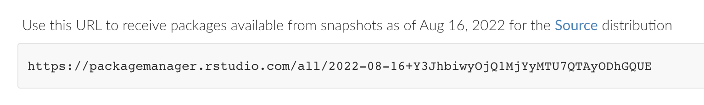

3 General policies
3.1 Development
All source code is version controlled on Github. Each R package has a single maintainer who is ultimately responsible for it.
We use issues for tracking bugs, features, code reviews, and anything else related to the code.
The “main” branch is assumed to be the current release. Branch protection should be added to main so that it can only be update through a pull request that has been reviewed. Feature development occurs on separate feature branches. Avoid long-lived feature branches by contributing the features to a release and removing the feature branch once the changes have been merged.
Strive for high unit test coverage of functionality. Use testthat for unit testing.
Use github workflows to add continuous integration testing to your package.
3.2 Lifecycle stages
Lifecycle badges apply at the package level. A version 1.0 release implies that the package is stable. A lifecyle badge on the github repo will be used to communicate the lifecycle stage which can be one of the following:
Experimental
Stable
Superseded (still maintained)
Deprecated (not maintained)
3.3 R package releases
R packages have releases. These releases are timed according to the needs of users and ultimately determined by the maintainer who is responsible for releasing a package. Package releases may be coordinated with the DARWIN Distribution cycle (once every 2-3 months. A release happens on github when a feature branch is merged into main. Releases should be automatically tagged and then pushed to the DARWIN package manager (forthcoming).
Before releasing a package maintainer must make sure all reverse dependency tests are passing. This involves running the unit tests on any package that depends on the package about to be released. The revdepcheck package can be used to run reverse dependency tests.
3.4 Darwin software distributions
A DARWIN Distribution is a complete set of packages and all their dependencies. It is a frozen set of software in the sense that if two people are using the same DARWIN Distribution then they are using exact same set of software. A Distribution of the complete set of R software needed for DARWIN is represented by a frozen URL from the DARWIN package manager. The frozen URL (example below) can be used to install a specific DARWIN Distribution (snapshot). Offline environments in DARWIN will use the frozen URL to install the entire set of R packages in a distribution that can be used in the future.

A DARWIN Distribution also specifies the environment that the code is expected to run on including
R version
System dependencies (RTools)
Operating System Characteristics (Linux, available RAM)
Java version
Environment variables
CDM version
Vocabulary version
Supported DBMS
3.5 Preparing a distribution
A candidate frozen URL will be generated one or two weeks before the release date. This URL will be used for a set of integration tests. If all tests pass then the URL will be tagged as the next Darwin Distribution.
Integration test will include:
Fresh install of all of the R packages on a new virtual machine
Run a set of test studies on all test databases using the new installation
3.6 Distribution/Release cadence
Initially two month intervals. We expect this to reduce to 4 month intervals as the project matures.
October 1st 2022 - all packages alpha, all packages on Github
December 1st 2022 - some stable packages on CRAN?
3.7 OHDSI HADES
DARWIN will adopt some R packages from OHDSI. These packages will be evaluated for dependencies before adoption and must be on CRAN.
Will we fork these? If so, will we use our fork or the versions in OHDSI?